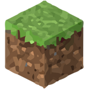

Serious Minecraft Gamer, and Tech Ministries Personnel at Mountain Springs Church
I am a tech at heart, and have always had a love of Minecraft. I love the things I can create in it, as well as the multiplayer servers you can play on with your friends. But first and foremost, I volunteer at Mountain Springs Church in the Tech Ministry. I run lights, and sometimes small mini-services. I have been running the tech for my church for 3 years now, and I love it!.